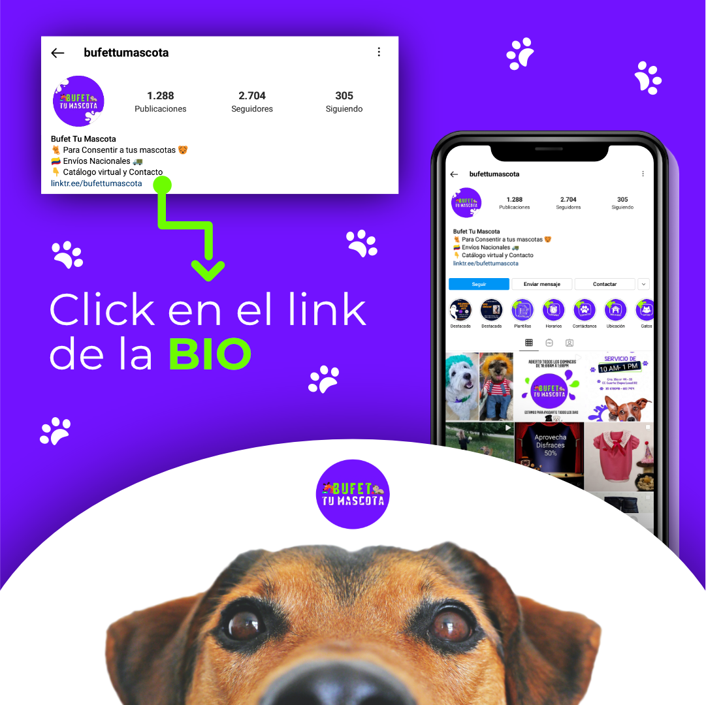

Bufet tu Mascota
En este proyecto, colaboré con una tienda dedicada a productos para mascotas, donde mi labor consistió en diseñar piezas gráficas personalizadas para ser utilizadas
en redes sociales y campañas publicitarias. Estas creaciones visuales fueron elaboradas a medida para promocionar los productos y servicios de la tienda, capturando
la atención del público objetivo y fortaleciendo la presencia de la marca en línea.
Comencé abordando el problema de desinformación entre nuestros clientes, especialmente aquellos mayores de 40 años con limitados conocimientos en tecnología,
quienes tenían dificultades para acceder al catálogo de la tienda. Para resolver esta situación, desarrollé un enlace directo que redirige a las opciones clave de la tienda,
incluyendo el catálogo, información general y detalles de contacto. Además, para mejorar la experiencia visual y facilitar la identificación de la marca, diseñé una identidad
gráfica para las distintas piezas, ya que la tienda carecía de una hasta ese momento.

Posteriormente, me enfoqué en la creación de piezas promocionales destinadas a resaltar las ofertas y promociones de la tienda. Mi enfoque se adaptó según las necesidades específicas de cada solicitud, utilizando estilos variados para presentar visualmente las promociones de manera atractiva y efectiva, buscando siempre destacar los beneficios de manera impactante para el público objetivo.
También participé en la creación de piezas temáticas para celebrar la época navideña. Durante este periodo, adapté un estilo acorde a la festividad para todas las piezas gráficas, incluyendo aquellas destinadas a promocionar los productos. Mi objetivo fue transmitir el espíritu navideño mediante un diseño coherente y atractivo, asegurándome de que las promociones de los productos mantuvieran la armonía visual con el tema festivo.

...